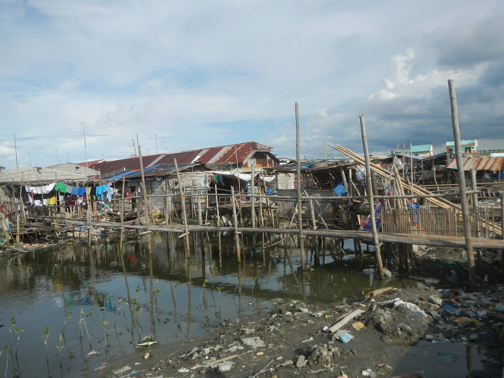

Interactive map
Where is Hagonoy, and what has been reported?
Switch between the municipality, its neighbours and a barangay named in recent reports. Zoom and move the map like any other.
Map by Google Maps. Open in Google Maps. If the map does not load, check your internet connection.
Areas named in sources
What the studies and reports say about each place
There is no official barangay-by-barangay subsidence map for Hagonoy that we could find. This table lists only what the cited sources state.
| Area | What was reported | Source |
|---|---|---|
| Hagonoy and Calumpit | Subsidence measured by satellite radar; up to about 124.5 mm/year near high-extraction zones (2015 to early 2021). | ISPRS Annals |
| San Agustin, Hagonoy | Daily tidal flooding even without rain; raised walkways and check gates overtopped; 4,759 households. | The Philippine Star, Dec 2025 |
| Hagonoy and Obando | Sinking roads and homes noted. | UP Resilience Institute |
| Guiguinto, Balagtas, Bulakan | Highest subsidence in Bulacan, 109 mm/year (2014 to 2020). | Sulapas et al. 2024 |
| Tibaguin, Santo Niño (Hagonoy) | Floodwater and stilt housing documented in photographs on Wikimedia Commons after a typhoon. | Wikimedia Commons |
Reading the map
How to use it
- Switch to Satellite inside the map to see fishponds, rivers and the shoreline.
- Notice how little land separates Hagonoy's barangays from tidal channels and Manila Bay.
- Think about the area you live in. Are there canals, fishponds or pumping stations nearby?
Not a hazard mapThis page is for awareness. Do not use it to decide whether to build, buy or evacuate. For official guidance, contact your barangay, the Municipal DRRMO or the provincial government.
Help build a better pictureSeen new cracks, a leaning post or water where there was none? Add it on the Report page with the barangay and a short description.